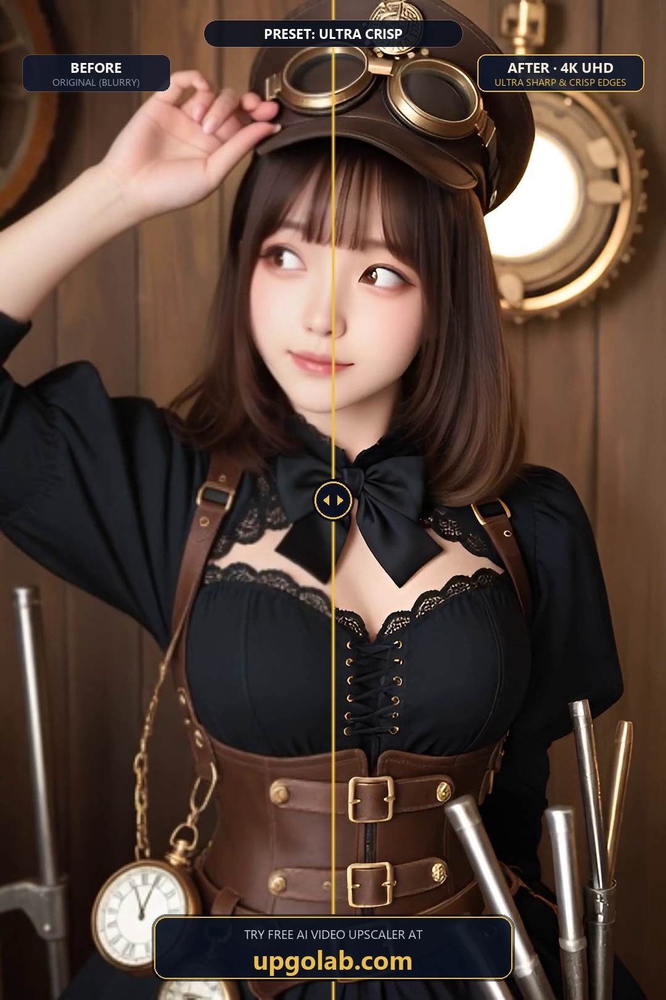
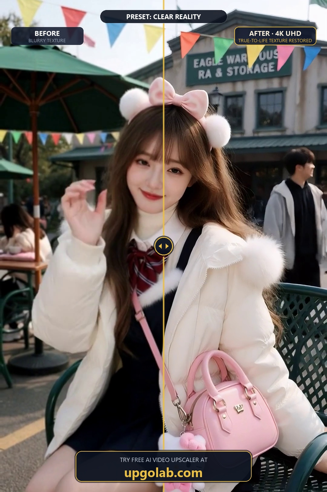

Upscaling product photos without fake-looking results
Most upscalers are tuned to look impressive in a demo, which means over-sharpened edges and invented texture. On a listing that reads as a fake product. Here is the honest order.
Reshoot first if you can
If you still have the item and a window, a new phone photo beats any upscale. Upscaling is for stock already sold, discontinued lines, and supplier catalogues where the original file is long gone.
What marketplaces actually require
| Platform behaviour | Practical target |
|---|---|
| Minimum long edge | usually 1000 to 1600 px |
| Preferred long edge | 1600 to 2000 px |
| Rejection risk | below minimum, plus heavy compression |
| Zoom inspection | buyers do zoom, so halos are visible |
Notice the numbers. A 900px phone export only needs one 2x step to clear a 1600px requirement. Chasing 4K from a phone sensor adds file weight without adding information.
The order for product work
- Check the backdrop: seamless white needs no denoise at all (measured zero grid), fabric or printed surface does
- Enlarge 2x per axis, crisp preset
- Denoise and sharpen at output resolution, gently — never on a 9–12 px label before enlarging
- Clean the background last, not first
This list used to open with "denoise the compression grid" for every file. The section further down measures why that step should not run before the enlargement on small print, and why it is worth skipping entirely on a seamless white backdrop.
Watch the logos
Brand marks and small print are the first casualty. The usual explanation is that pushing past 2x damages the letterform, but that is not what a measurement shows — the deciding variable is how many pixels tall the letters were in the original file. Below about 10 px of cap height nothing recovers them; above about 12 px the enlargement is safe at any factor. The next section measures it.
Step one of the workflow, measured: does denoising the grid first actually help?
The order of operations near the top of this page opens with "Denoise the compression grid, especially on supplier files" and then enlarges. That ordering is the one step in the list I never tested, and it turns out to be right for a different reason than the one it gives — and wrong for the case most of this page is about.
There is a specific reason to doubt it. On a white-background listing the backdrop is nearly a constant. A DCT block over a constant has exactly one non-zero coefficient, the DC term, and no AC energy at all. So there is nothing for the quantiser to bite on, and the block boundary should come back essentially unchanged. If that is true, then "denoise the grid" on a studio white backdrop is a step that can only cost you something, because it has nothing to remove. Test that first, because if blocking is real the whole argument flips.
How much block structure is actually left in the file
Measure it on a signal with no glyphs in it at all, so nothing but the JPEG grid can produce a periodic residual. A backdrop-only patch, 256×96 (both multiples of 8 so the block lattice aligns), saved at a range of qualities, then the best-fit plane subtracted and the surviving residual averaged separately on block-boundary rows/columns and on interior rows/columns. The unit is 8-bit levels, and as a percentage of the paper-to-ink contrast, which for this patch is 234,6 levels — that second figure is the one that tells you whether a buyer could see it.
| Backdrop | Block boundary, q95 | q75 | q50 | q30 | % of label contrast, q30 |
|---|---|---|---|---|---|
| perfectly flat white | 0,000 lv | 0,000 | 0,000 | 0,000 | 0,0000% |
| 1 level of falloff | 0,209 | 0,209 | 0,417 | 0,626 | 0,2668% |
| 4 levels of falloff | 0,246 | 0,246 | 0,501 | 1,022 | 0,4357% |
| 16 levels of falloff | 0,250 | 0,250 | 0,500 | 0,922 | 0,3928% |
| 64 levels of falloff | 0,159 | 0,176 | 0,772 | 1,025 | 0,4370% |
The first row is exact zero at every quality from q10 to q100, not "small". A flat field survives JPEG with a maximum error of 1 level at q30 and 0 levels above q60, and its block-boundary residual is 0,000 lv in all ten cases. There is no grid to denoise, because the grid was never written.
The second thing in that table is the more useful one. Blocking does not keep growing as the backdrop gets more signal — it saturates. Going from 1 level of falloff to 64 levels, a 64× increase in the gradient the block has to encode, moves the boundary residual from 0,626 lv to 1,025 lv and then stops. Above about 4 levels of falloff the number sits at 0,39–0,44% of label contrast regardless of much signal you add. The quantiser is being asked to encode a 1-level step across a block edge, and it either encodes it or it does not; there is no quantity of extra gradient that produces a bigger step. That saturation is why a supplier file's visible grid stays at roughly the same faintness however bad the file looks elsewhere.
What the denoise step costs, before versus after the enlargement
Now the ordering question, with a label in the frame. Three denoisers, each applied either to the file at source resolution before the 2× enlargement, or to the enlarged result afterwards. Scored as ink-mask IoU against a native render at the output size, same construction as the cap-height tables further up this page, so the numbers are on the same scale. Cap 12 px, supplier file at q30:
| Denoise | Order | IoU | vs no denoise | ringing removed |
|---|---|---|---|---|
| none | — | 0,9013 | baseline | — |
| median 3×3 | before | 0,5655 | −0,3364 | 52,6% |
| median 3×3 | after | 0,8808 | −0,0211 | 36,5% |
| gaussian σ0,8 | before | 0,8104 | −0,0916 | 55,3% |
| gaussian σ0,8 | after | 0,8994 | −0,0025 | 36,0% |
| bilateral d5 σ12 | before | 0,8996 | −0,0023 | 17,9% |
| bilateral d5 σ12 | after | 0,9006 | −0,0013 | 26,6% |
Read the "before" column and the reason the workflow has been costing you becomes obvious: at source resolution a glyph stroke at 12 px cap height is 2–3 px wide, and a 3×3 median is wider than the stroke. It does not denoise the text, it deletes it. IoU drops to 0,566 — a third of the letter area crosses the ink threshold the wrong way — and the file that comes out of step one is not a cleaner version of your photo, it is a different, worse photo that step two then faithfully enlarges.
Mean over cap height 9, 12 and 16 px and both qualities, so this is not one lucky row:
| Denoise | mean Δ IoU, before | mean Δ IoU, after | ringing removed, after |
|---|---|---|---|
| bilateral d5 σ12 | +0,0004 | −0,0016 | 40,0% |
| gaussian σ0,8 | −0,1553 | −0,0101 | 37,5% |
| median 3×3 | −0,3316 | −0,0221 | 32,4% |
Every denoiser is cheaper after the enlargement than before it, and the two wide ones are cheaper by an order of magnitude. The one that survives being applied first is the edge-preserving one: bilateral loses 0,0004 when run before the enlargement and 0,0016 after, so both orders are fine for it, while gaussian and median lose 0,16 to 0,33 in the wrong order. The mechanism is the one the cap-height section already established from the other direction: at source resolution the stroke is 2 px and any kernel of radius 1 eats it; at output resolution the stroke is 4 px and the same kernel is proportionally half as destructive.
Why a deblocker has nothing to act on, in one line
Worth stating plainly because it explains the zero row. A median filter over a monotone gradient is the identity function: the 3×3 neighbourhood of any interior pixel k is {k−1, k, k+1}, whose median is k. Measured on a 245→180 ramp 4.096 px wide, a 3×3 median changes the image by 0,0 levels — exactly nothing, at every pixel. So on a smooth studio backdrop both the artifact and the tool that is supposed to remove it are absent, and the filter passes your image through unchanged. That is the rare case where a useless step is harmless. It is not harmless one row down the table, where the same filter is deleting glyph strokes.
The line where blocking becomes worth fixing
So "denoise the grid first" is not wrong, it is conditional, and the condition is how much signal the backdrop carries. Same boundary-residual measurement across five backdrop classes, q30, as a percentage of label contrast:
| Backdrop | local σ | blocking, q30 | blocking, q60 | worth a step? |
|---|---|---|---|---|
| seamless white, flat | 0,0 | 0,0000% | 0,0000% | no — nothing there |
| soft light falloff | 1,2 | 0,4357% | 0,1706% | no — under 0,5% |
| light grain / fabric | 1,7 | 0,3318% | 0,1943% | no |
| heavy grain | 4,2 | 0,4953% | 0,9017% | borderline |
| patterned texture | 4,1 | 1,6383% | 1,4500% | yes |
The textured backdrop shows 8,5× the blocking of the soft-falloff one at the same quality. So the honest version of step one is: measure the backdrop first. If it is a seamless white sweep, skip the denoise entirely — the measurement says there is provably nothing in it, and at 9–12 px cap height the denoise costs you 0,33 IoU. If the item sits on fabric, a printed surface, or a textured set, the grid is real, and a bilateral pass removes 6–31% of it (largest on heavy grain) for a few thousandths of IoU. The two cases want opposite orders, and the page used to prescribe one of them to both.
The one thing that held across every row: enlarging first never made blocking worse. The block boundary residual after a 2× lanczos enlargement was 0,38–1,00× its value in the source file — never above it — so upscaling neither creates nor amplifies a grid. Whatever is in the file when you start is what you get, which is the argument for fixing it at capture rather than in the editor.
Results at 100% crop




Where small print actually breaks: measured, not assumed
The advice further up this page says that past 2x a letterform "becomes a shape that resembles the letter without being it", and that if a logo smears you should "drop to 1.5x rather than pushing". Both halves of that are testable, so I tested them, and the first half is wrong in an instructive way.
The problem with the claim is that it blames the scale factor. Scale factor is the one variable you control. What decides whether a label survives is how many pixels tall the letters were in the file you started with, and that number is usually set by how far away the photographer stood. Below, cap height means the height of a capital letter in the source image, in pixels.
The setup, so you can rerun it
Everything is rendered from one supersampled master and box-downsampled, so the source and the reference sit on exactly the same pixel grid. That matters: if you build the reference by resampling the upscaled image, you are measuring your own resampler. Three renders per measurement:
- source — text drawn at 16x, box-downsampled to 1x
- native (control) — the same text drawn at 16x, box-downsampled straight to the target size
- upscaled — the 1x source resized to the target size with bilinear, bicubic or lanczos
The score is ink-mask IoU against the native render. 1,000 means the upscale is indistinguishable from having captured at the target resolution; 0,333 means two thirds of the letter shapes are wrong. The mask threshold is the midpoint between paper and ink, so this measures shape, not brightness.
One control before any of the numbers mean anything. Building the native render twice — once from a 16x master, once from a 64x master — does not give identical images, so I scored those two builds against each other. The agreement runs from 0,904 to 0,986 across the twelve size/factor combinations, and it is worst at 7 px cap height (0,904) where a single pixel of glyph edge is half the stroke. That is the ceiling: a score can never exceed what the reference itself agrees with on a rebuild. So read the tables below as "how much of the available agreement did this recover", and treat anything above about 0,90 as being close enough to the limit that the remaining gap is mostly the measurement's own noise rather than a difference you could see.
The 7 px row is worth dwelling on for a second, because it is the row that would poison a naive reading. Its ceiling is 0,904 and lanczos reaches 0,669 — 74% of what was achievable. That looks like a respectable score in isolation. It is not: 0,669 means a third of the glyph area lands on the wrong side of the ink threshold, which is the difference between a readable label and a smudge.
Cap height decides, scale factor barely matters
Lanczos at 2x, one string of digits and letters, six different source cap heights. IoU after upscaling, against the native render at the same output size:
| Source cap height | Ink px in source | bilinear | bicubic | lanczos | ceiling |
|---|---|---|---|---|---|
| 5 px | 38 | 0,130 | 0,320 | 0,333 | 0,981 |
| 7 px | 80 | 0,477 | 0,602 | 0,669 | 0,904 |
| 9 px | 129 | 0,723 | 0,797 | 0,858 | 0,978 |
| 12 px | 197 | 0,905 | 0,912 | 0,941 | 0,976 |
| 16 px | 425 | 0,933 | 0,937 | 0,955 | 0,973 |
| 22 px | 764 | 0,968 | 0,966 | 0,972 | 0,984 |
The move from 5 px to 22 px cap height is worth 0,639 IoU. Now hold the source still and change only the scale factor:
| Source cap height | 2x | 3x | 4x | spread |
|---|---|---|---|---|
| 5 px | 0,333 | 0,406 | 0,357 | 0,073 |
| 7 px | 0,669 | 0,707 | 0,715 | 0,047 |
| 9 px | 0,858 | 0,864 | 0,792 | 0,072 |
| 12 px | 0,941 | 0,952 | 0,933 | 0,020 |
| 16 px | 0,955 | 0,937 | 0,948 | 0,019 |
| 22 px | 0,972 | 0,957 | 0,974 | 0,017 |
The largest spread any scale factor produces, anywhere in the table, is 0,073. Cap height is worth 8,7 times more than the choice of 2x versus 3x versus 4x. Notice also that the spread shrinks as cap height grows: at 22 px, 2x and 4x are within 0,002 of each other. The 3x column is the worst of the three at every cap height above 12 px, which is a rounding coincidence of where pixel centres land, not a rule — the differences are inside the measurement's own noise.
The knee is at about 10 px of cap height
A single table hides where the cliff is, so the same measurement run at every integer cap height from 6 to 16, on two different strings. The second string is there to check that the result is a property of the size and not of one particular arrangement of glyphs:
| String | IoU at 6 px | IoU at 9 px | IoU at 16 px | cap height for IoU 0,90 |
|---|---|---|---|---|
SIZE 42 | 0,667 | 0,858 | 0,955 | 9,83 px |
MADE IN VN | 0,596 | 0,878 | 0,937 | 9,43 px |
Two different strings, both crossing 0,90 IoU within half a pixel of each other. That is a real threshold and it is about 10 px of cap height in the source. Under it, upscaling produces something that reads as writing at a glance and not as writing on inspection — which is exactly the "resembles the letter without being it" effect, except it is a function of capture size, not of pushing past 2x. Over it, no kernel choice matters much and the enlargement is safe.
The 1.5x fallback, tested, does nothing
The page used to say: if the logo smears, drop to 1.5x. That advice implies 1.5x preserves something 2x destroys. Here is the same final output size reached two ways — one 2x step, versus a 1.5x step followed by a 1,333x touch-up — scored against the same native reference:
cap 2x direct via 1.5x difference
5 0,333 0,333 +0,0000
7 0,669 0,671 +0,0028
9 0,858 0,863 +0,0054
12 0,941 0,941 +0,0000
16 0,955 0,956 +0,0006The best the detour ever buys is 0,0054 IoU at 9 px cap height, which is a third of the spread caused by picking a different kernel at that same size. In two of the five cases it buys literally nothing. Dropping to 1.5x does not preserve small print; it just gives you a smaller file that you then enlarge again, and the second enlargement throws away whatever the first one saved. If a label is unreadable after 2x, it was under 10 px of cap height in the file, and the fix is a new capture, not a different multiplier.
Sharpening: helps only where the text is already lost
Unsharp mask after a 2x lanczos upscale, radius 1,0. The two columns that matter are the IoU gain and what it costs in halo — overshoot brighter than the paper, as a percentage of the full paper-to-ink range:
| Source cap height | IoU, sharpening off | IoU, 100% unsharp | gain | halo, off | halo, 100% |
|---|---|---|---|---|---|
| 5 px | 0,333 | 0,536 | +0,2026 | 10,4% | 26,4% |
| 9 px | 0,858 | 0,813 | −0,0445 | 21,7% | 45,5% |
| 16 px | 0,955 | 0,954 | −0,0017 | 13,4% | 32,4% |
At 5 px cap height sharpening is a large win — it adds 0,20 IoU, the single biggest improvement in this whole article. At 9 px it loses 0,045, and at 16 px it does nothing. The mechanism is simple: at 5 px the glyphs are so blurred that thickening them pulls the mask back toward the true shape, and at 9 px they are already roughly right, so thickening them pushes the mask past the reference into the halo. This is why sharpening small print feels like it works when you check a logo you already know how to read, and why it makes a product look counterfeit when a buyer who does not know the logo checks it at zoom.
Halo roughly doubles to triples in every case. On a white-background listing that halo is against a bright field, which is where it reads as a reflective rim rather than as crispness.
Two things that turned out not to matter
Chaining 2x twice is the same as 4x once. Scored against the same native 4x reference, the difference is under 0,002 at every cap height tested: 0,715 versus 0,714 at 7 px, 0,933 versus 0,935 at 12 px, 0,974 versus 0,974 at 22 px. If a tool only offers 2x steps, take two of them and stop worrying.
JPEG quality does not behave monotonically. A cap-12 source saved at three qualities, then upscaled 2x with lanczos:
| Saved at | IoU after 2x | ink mass retained | halo |
|---|---|---|---|
| q95 | 0,939 | 100,0% | 14,56% |
| q85 | 0,945 | 100,1% | 19,31% |
| q70 | 0,931 | 100,0% | 22,28% |
q85 beats q95 by 0,006 IoU. That is not a recommendation to save at 85 — the halo cost rises by 4,75 points, which is four times the IoU difference, and it is in the direction a buyer can see. The honest reading is that the IoU difference is inside the noise, and that ink mass is preserved at every quality (100,0 to 100,1%), so compression at these settings redistributes the label's edges into ringing rather than deleting them. Ringing is the thing that shows up as a light outline, and the halo column is where you see it.
The only number you need before you shoot
Print measurement is not abstract, so here is the same measurement converted into a decision you can make before the shutter. A small legal line on a product label is about 1,2 mm tall, and the frame covers about 300 mm of the actual product across its long edge. That gives pixels per millimetre, then cap height, then the IoU the 2x upscale will produce:
| Capture long edge | px per mm | cap height in source | IoU after 2x | verdict |
|---|---|---|---|---|
| 1000 px | 3,33 | 4,00 px | 0,667 | too small |
| 1600 px | 5,33 | 6,40 px | 0,667 | too small |
| 2000 px | 6,67 | 8,00 px | 0,881 | too small |
| 3000 px | 10,00 | 12,00 px | 0,941 | usable |
| 4000 px | 13,33 | 16,00 px | 0,955 | usable |
Read the third column, not the first. A 2.000 px capture and a 4.000 px capture differ by a factor of two in file size and by 0,07 IoU — but the 2.000 px one lands at 8 px cap height, which is on the wrong side of the 10 px knee. The two rows that clear the threshold are the two where the label got at least 12 px, and you can reach that from a 1.600 px file by simply standing closer or framing tighter. Which is the whole finding restated as a camera instruction: zoom and position buy more label legibility than resolution, because they raise cap height directly, while resolution spends itself over the whole scene.
Two caveats on that table, stated rather than buried. The assumptions are a 1,2 mm line and a 300 mm frame width; if your product fills a fifth of the frame instead of a tenth, every cap height doubles and the verdict moves up a row. And the IoU column is interpolated on the measured cap-height sweep, so it inherits that ceiling — a row showing 0,955 sits within 0,02 of the best the reference agrees with itself, which is why the last two rows read as a plateau rather than a trend.
Reproducing the first table
Self-contained, no input files. Needs numpy and Pillow. The cap-height sweep uses boxes of 150x60 pixels, which is small on purpose so that 4x stays cheap:
#!/usr/bin/env python3
"""Copy-paste reproduction of the cap-height table. No input files, no /tmp."""
import numpy as np
from PIL import Image, ImageDraw, ImageFont
FONT = "/usr/share/fonts/truetype/dejavu/DejaVuSans.ttf"
PAPER, INK, SS, CANVAS = 0.70, 0.04, 16, (150, 60)
THR = (PAPER + INK) / 2
def cap_font(cap):
"""Font size whose 'H' is <cap> px tall. Hinting drifts, so iterate."""
f = ImageFont.truetype(FONT, 400)
b = f.getbbox("H")
size = 400 * cap / (b[3] - b[1])
for _ in range(5):
f = ImageFont.truetype(FONT, max(1, round(size)))
b = f.getbbox("H")
size = size * cap / (b[3] - b[1])
return ImageFont.truetype(FONT, max(1, round(size)))
def at(cap, k):
"""Render 'SIZE 42' at k x, from one SS-supersampled master."""
f = cap_font(cap * SS)
im = Image.new("L", (CANVAS[0] * SS, CANVAS[1] * SS), round(PAPER * 255))
d = ImageDraw.Draw(im)
b = d.textbbox((0, 0), "SIZE 42", font=f)
d.text(((im.width - (b[2] - b[0])) // 2 - b[0],
(im.height - (b[3] - b[1])) // 2 - b[1]), "SIZE 42", font=f,
fill=round(INK * 255))
return im.resize((CANVAS[0] * k, CANVAS[1] * k), Image.BOX)
def arr(im):
return np.asarray(im, dtype=np.float32) / 255.0
def iou(a, b):
ma, mb = a < THR, b < THR
return (ma & mb).sum() / (ma | mb).sum()
for cap in (5, 7, 9, 12, 16, 22):
src, nat = at(cap, 1), at(cap, 2)
out = [f"{cap:2d}px"]
for flt in (Image.BILINEAR, Image.BICUBIC, Image.LANCZOS):
up = src.resize((src.width * 2, src.height * 2), flt)
out.append(f"{iou(arr(up), arr(nat)):.3f}")
print(" ".join(out))Expected output, three decimals, columns are bilinear, bicubic, lanczos:
5px 0.130 0.320 0.333
7px 0.477 0.602 0.669
9px 0.723 0.797 0.858
12px 0.905 0.912 0.941
16px 0.933 0.937 0.955
22px 0.968 0.966 0.972Reproducing the grid measurement
Self-contained, numpy and Pillow only. It prints the flat row and the 4-level row of the first table, plus the median-vs-enlarge ordering for one cap height. If your numbers differ from the table above, your Pillow build is using a different DCT path and the flat row is the one to check — it must be exactly 0,000.
#!/usr/bin/env python3
"""Does a white product backdrop carry a JPEG block grid? Prints both tables."""
import io, numpy as np
from PIL import Image, ImageFilter
W, H = 256, 96 # both multiples of 8: block lattice aligns
INK, PAPER = 0.04, 0.96
CONTRAST = (PAPER - INK) * 255.0 # 234.6 levels
def jpeg(im, q):
b = io.BytesIO(); im.save(b, "JPEG", quality=q, subsampling=0); b.seek(0)
return Image.open(b).convert("L")
def block_step(im, grid=8):
"""Mean |residual from best-fit plane| at block boundaries, in 8-bit levels."""
a = np.asarray(im, dtype=np.float64); h, w = a.shape
yy, xx = np.mgrid[0:h, 0:w]
A = np.c_[xx.ravel(), yy.ravel(), np.ones(h * w)]
coef, *_ = np.linalg.lstsq(A, a.ravel(), rcond=None)
res = (a.ravel() - A @ coef).reshape(h, w)
cols, rows = np.arange(w), np.arange(h)
mc = (cols % grid == 0) | (cols % grid == grid - 1)
mr = (rows % grid == 0) | (rows % grid == grid - 1)
cr, rr = np.abs(res).mean(axis=0), np.abs(res).mean(axis=1)
return float(np.r_[cr[mc], rr[mr]].mean())
def backdrop(span):
g = np.linspace(245, 245 - span, W, dtype=np.float32)
return Image.fromarray(np.tile(g.round().astype(np.uint8)[None, :], (H, 1)), "L")
# table 1: blocking against how much falloff the backdrop carries
print(f"contrast {CONTRAST:.1f} lv")
for span in (0, 1, 4, 64):
b = block_step(jpeg(backdrop(span), 30))
print(f" falloff {span:>3} lv -> q30 boundary {b:.3f} lv = {b/CONTRAST*100:.4f}% of contrast")
# flat is exact zero at every quality, not merely small
print(" flat at q10..q100:",
" ".join(f"{block_step(jpeg(backdrop(0), q)):.3f}" for q in (10, 30, 50, 95)))
# a median over a monotone gradient is the identity function
ramp = backdrop(65) # 245 -> 180
r1 = np.asarray(ramp, dtype=np.float64)
r2 = np.asarray(ramp.filter(ImageFilter.MedianFilter(3)), dtype=np.float64)
print(f" median3 on a 245->180 ramp: max change {np.abs(r1 - r2).max():.1f} lv")Expected output:
contrast 234.6 lv
falloff 0 lv -> q30 boundary 0.000 lv = 0.0000% of contrast
falloff 1 lv -> q30 boundary 0.626 lv = 0.2668% of contrast
falloff 4 lv -> q30 boundary 1.022 lv = 0.4357% of contrast
falloff 64 lv -> q30 boundary 1.025 lv = 0.4370% of contrast
flat at q10..q100: 0.000 0.000 0.000 0.000
median3 on a 245->180 ramp: max change 0.0 lvNote the last two lines together. The grid is absent on the flat backdrop at every quality, and the filter's own cost is zero there too — so the step is neither harmful nor useful, and the only thing it can do is matter at a lower cap height where the same kernel is wider than the stroke.
Frequently asked
Should you denoise before or after upscaling a product photo?
After, unless the denoiser preserves edges. Measured at 12 px cap height on a q30 file, a 3×3 median run before a 2× enlargement drops ink IoU from 0,901 to 0,566 — 14 times the damage that compression itself caused — because a 3×3 kernel is wider than a 2 px stroke. The same median run after the enlargement costs 0,021. A bilateral pass is the exception: it loses 0,0004 either way.
Does a white background carry a JPEG block grid?
No, and the measurement is exact zero rather than small. A block over a constant has one non-zero DCT coefficient and no AC energy, so a flat backdrop comes back with 0,000 levels of block-boundary residual at every quality from q10 to q100. Blocking only appears once the backdrop carries signal — about 0,44% of label contrast on a soft falloff, 1,64% on a patterned texture, which is 8,5 times more.
What resolution do marketplaces require for product photos?
Most want a long edge of 1600 to 2000 px and reject below 1000. A phone photo usually clears that with one 2x step.
Why do upscaled product photos look fake?
Over-sharpening and invented texture. Halos form on edges and logos turn into letter-shaped artifacts.
How small can text be before upscaling cannot recover it?
About 10 px of capital-letter height in the source. Below that, measured ink-mask IoU against a native render stays under 0,90 whatever kernel or factor you pick. Above about 12 px, 2x and 4x land within 0,002 of each other.
Should you upscale or reshoot for a listing?
Reshoot if the item is still available. Upscale for sold stock, discontinued lines and archive catalogues.
Does upscaling help a shot that is already sharp?
Barely. It helps when the file is under the marketplace minimum, not when it already passes.
Tool
The crisp preset used here is one of eight in UpgoLAB, browser based, free during launch, no watermark, photos to 4 MP — and what that cap removes is measured in these detail-retention numbers. Other angles: tool comparison and blurry video guide.